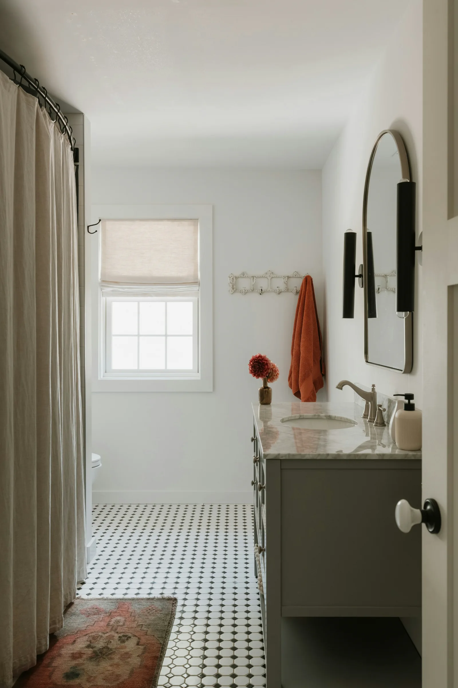
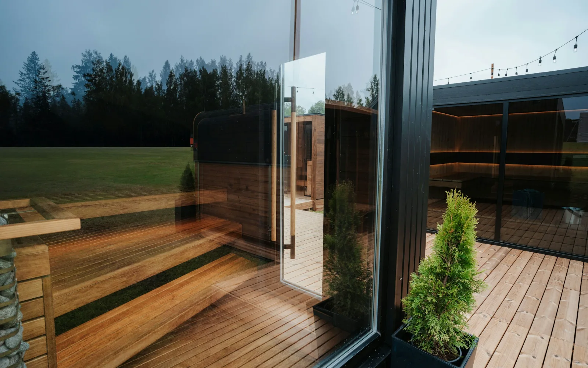
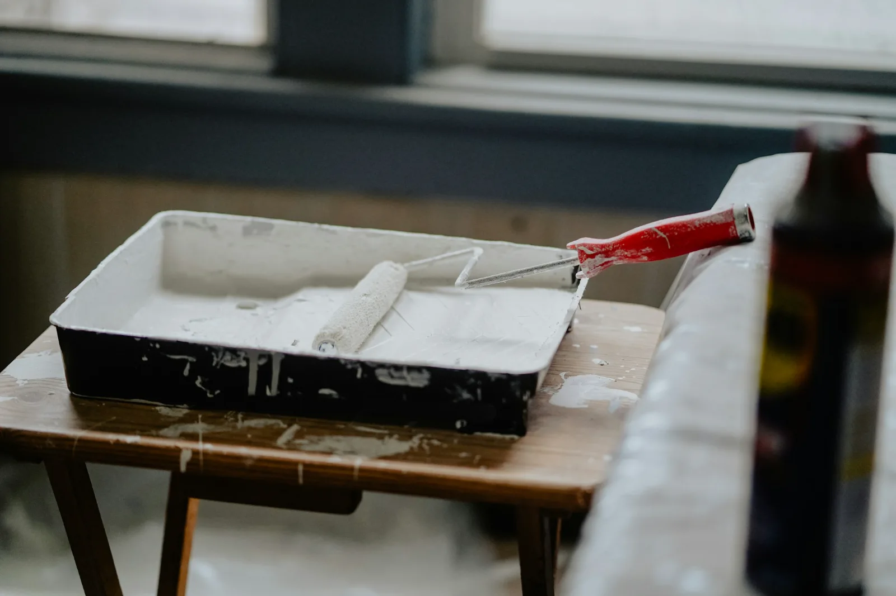
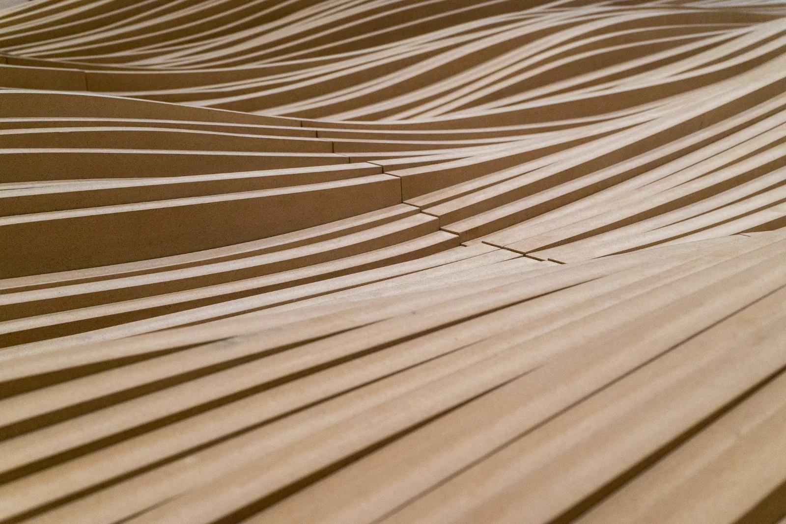

Våra tjänster
Byggt runt
dina planer.
Från ett nytt golv till en komplett renovering. Utforska vad vi kan hjälpa dig med.

Renovering
Förnya det du redan har.
Läs om tjänsten
Badrumsrenovering
Ett badrum att trivas i.
Läs om tjänsten
Köksrenovering
Mer plats för vardagen.
Läs om tjänsten
Altan & uterum
Flytta livet utomhus.
Läs om tjänsten
Markarbete & stenläggning
Bra resultat börjar under ytan.
Läs om tjänsten
Målning & fasad
Omsorg om varje yta.
Läs om tjänsten
Snickeri
Byggt för att passa.
Läs om tjänsten
Totalentreprenad
En kontakt. Hela projektet.
Läs om tjänstenFler delar av ditt projekt.
Fördjupa dig i ett särskilt arbete.
Vad vill du
bygga vidare på?
Berätta om dina planer.
Vi hjälper dig att hitta nästa steg.